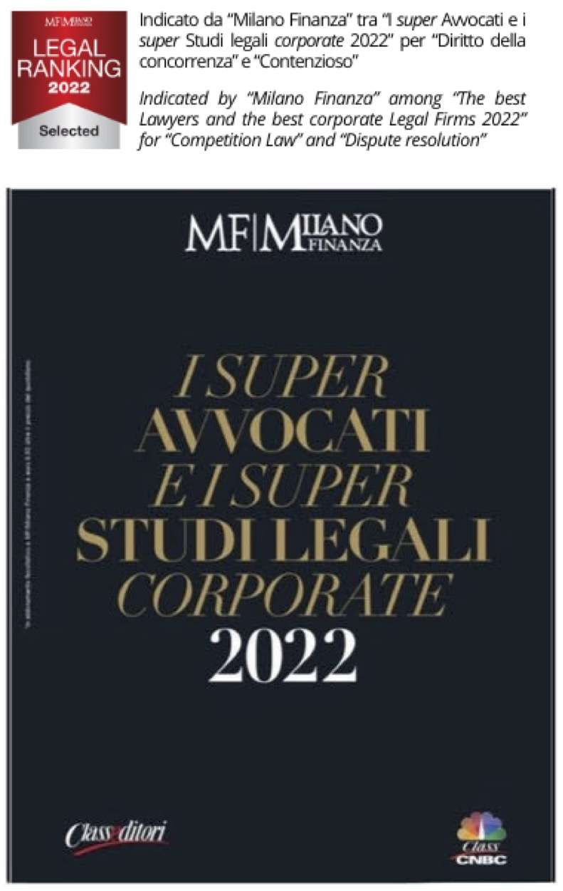

NOVA
2022 - 30 maggio
Donà Viscardini confermato da “Milano Finanza” per il diritto della concorrenza e ora segnalato anche per il contenzioso

- “Class Editori” ha pubblicato la nuova edizione del volume
"I super Avvocati e i super Studi legali corporate” selezionati da “Milano Finanza”.
- Donà Viscardini, anche per il 2022 (v. “Nova" del 30 aprile 2020 e 5 maggio 2021), è stato selezionato per il diritto della concorrenza
e, per la prima volta, per il contenzioso.
- A titolo individuale, menzionati anche i soci Wilma Viscardini e Gabriele Donà.
2022 - 4 aprile
Colloquio a Parigi sulle professioni in Europa
- Presso la Facoltà di Giurisprudenza dell’Università "Parigi-Est Créteil”
avrà luogo il "Carrefour des métiers de l'Europe”, organizzato (tra gli altri) dalla
“Associazione francese di Studi europei” (in allegato la (
locandina
).
2022 - 2 marzo
L’Avv. Gabriele Donà e il primato del diritto europeo sui diritti nazionali
- Su invito del Rotary Club Padova, l’Avv. Donà ha trattato il tema "Il primato del diritto europeo
e il ruolo della Corte di giustizia dell'Unione Europea” (
locandina
) dopo che alcune Corti costituzionali di altri Stati membri
(in specie, Polonia) hanno recentemente messo in discussione tale principio fondamentale dell’Unione europea.
2021 - 1 dicembre
Gli Avv.ti Simonetta Donà e Gabriele Donà intervengono all’Assemblea Generale della Uniteis e.V.
- In occasione dell’Assemblea Generale della Uniteis e.V. - tenutasi presso "Longarone Fiere"
il 1° dicembre 2021 - gli Avv.ti Simonetta Donà e Gabriele Donà sono intervenuti per illustrare alcune
iniziative legali intraprese dallo Studio a livello europeo a tutela degli interessi di Uniteis e dei suoi soci.
2021 - 15 novembre
In memoriam - Scomparsa del Dr. Gaetano Donà
- Donà Viscardini, con profonda tristezza, comunica che lunedì 15 novembre è mancato il Dr. Gaetano Donà.
- Dal 1975 assisteva il nostro Studio legale quale "of counsel" per le relazioni con le istituzioni dell'Unione europea, in ragione della sua prestigiosa esperienza in materia.
- Dal 1959 al 1973, infatti, era stato un alto funzionario presso il Segretariato Generale della Commissione delle Comunità europee, rivestendo il ruolo di Capo della Divisione "Riunioni dei Membri della Commissione europea e dei Capi di Gabinetto". In tale veste aveva avuto il grande privilegio di operare strettamente, sotto l’autorità del Segretario Generale Emile Noël, con cinque Presidenti della Commissione europea.
- Dal 1995 al 2014 era stato docente incaricato del Corso di "Integrazione europea" all'Università di Ferrara. Nel contempo, dal 1996 al 2001 era stato Membro del “GroupEuro”, rete di conferenzieri sull’Unione Economica e Monetaria designata dalla Commissione europea.
- Sostenitore e attore convinto del progetto comunitario, era stato anche artefice di iniziative legali pionieristiche. Tra queste, celeberrima è la causa
“Donà/Mantero” del 1976 (in cui venne rappresentato da Wilma Viscardini) nella quale la Corte di giustizia - accogliendo la tesi da lui sostenuta - per la prima volta si pronunciò in materia di libera circolazione dei calciatori professionisti comunitari affermando che la normativa italiana che ne impediva il tesseramento da parte delle squadre italiane si poneva in contrasto con le norme del Trattato sulla libera circolazione dei lavoratori e sulla libera prestazione dei servizi. Tale sentenza della Corte di giustizia fu determinante per una limitata apertura delle frontiere in Serie A nella stagione 1980-81.
- Al Dr. Gaetano Donà va la più profonda riconoscenza. Lascia un vuoto incolmabile, ma il suo insegnamento, il suo garbo e la sua umanità costituiscono un prezioso lascito che lo Studio si impegna a custodire e coltivare.
2021 - 1 ottobre
Evento formativo in materia di diritto di famiglia in ambito europeo
- Si svolgerà in “aula virtuale” il seminario "Focus sul diritto di famiglia in Europa. Quali novità per gli Avvocati?” organizzato dall'"Unione degli Avvocati Europei” (U.A.E.) e "Avvocati Diritti Umani” (A.D.U.), patrocinato dall'Ordine degli Avvocati di Lecce (
in allegato il programma
).
- L’Avv. Gabriele Donà parlerà de “Giudice di famiglia e rinvio pregiudiziale alla Corte di giustizia dell’Unione europea: fase ascendente, aspetti procedurali, effetti delle sentenze pregiudiziali”.
2021 - 25 giugno
XXXIV Congresso Annuale dell'"Unione degli Avvocati Europei" (U.A.E.)
- Si è svolto online il XXXIV Congresso Annuale dell’U.A.E. “A European Union of Justice. Challenges for judicial cooperation in Europe" (
in allegato il programma in EN
).
- L’Avv. Gabriele Donà, nella sua qualità di Past Presidente dell’U.A.E., ha co-aperto i lavori e moderato la prima Sessione “Judicial cooperation in civil and commercial matters”.
2021 - 5 maggio
Donà Viscardini confermato da “Milano Finanza” per il diritto della concorrenza e ora segnalato anche per il diritto fiscale internazionale
- Nell’aprile 2021, “Class Editori” ha pubblicato la nuova edizione del volume
“I migliori Avvocati e i migliori Studi legali corporate” selezionati da “Milano Finanza”.
- Donà Viscardini, anche per il 2021 (v. “Nova" del 30 aprile 2020), è stato selezionato per il diritto della concorrenza (salendo da "selected" a "best") e, per la prima volta, inserito nel settore del diritto tributario internazionale (categoria "best").
- A titolo individuale, riconoscimenti per i soci Wilma Viscardini (diritto tributario) e Gabriele Donà (diritto della concorrenza e diritto fiscale).
2021 - 18 febbraio
Seminario di diritto della concorrenza dell’Unione europea
- Nell’ambito del Modulo II (“Il diritto della concorrenza”) del “Corso di perfezionamento e specializzazione in diritto dell’Unione europea” dell'Università degli Studi di Milano (v. “Nova" del 30 ottobre 2019 e 7 maggio 2020), si svolgerà in “aula virtuale” il seminario “Il private enforcement delle regole di concorrenza” (
in allegato la locandina
).
- L’Avv. Gabriele Donà parlerà de “L’attuazione in Italia della direttiva 2014/104/UE sul risarcimento del danno per violazione del diritto della concorrenza: inquadramento e applicazioni pratiche”.
2020 - 9 dicembre
Seminario di diritto processuale europeo e diritto del lavoro
- Nell’ambito del “Corso di dottorato in diritto internazionale e diritto privato e del lavoro” dell'Università degli Studi di Padova, l’Avv. Gabriele Donà parlerà de “Diritto del lavoro nell’UE: il rinvio pregiudiziale alla Corte di giustizia, le sentenze pregiudiziali e il vincolo del precedente”.
- Il seminario si svolgerà in “aula virtuale“ (
in allegato la locandina
).
2020 - 13 novembre
L’AVV. GABRIELE DONÀ CONCLUDE IL MANDATO QUALE PRESIDENTE DELL'UNIONE DEGLI AVVOCATI EUROPEI
- Con l’Assemblea Generale del 13 novembre (nel corso della quale ha presentato il suo “President’s Report”), l’Avv. Gabriele Donà ha concluso il mandato biennale quale Presidente dell’ European Lawyers’ Union (UAE).
- In allegato figura un suo
"official statement"
al riguardo.
- L’Avv. Donà tornerà ora a dedicarsi completamente a Donà Viscardini Studio legale.
- Come membro d’ufficio (per un anno) del nuovo Bureau e Presidente onorario, continuerà ovviamente a seguire e sostenere l’attività dell’UAE.
2020 - 27 maggio
Corso di formazione in diritto processuale europeo e diritto del lavoro
- Si svolgerà in “aula virtuale” il terzo incontro del Corso "Diritto dell’Unione Europea e diritto del lavoro nel contesto europeo” organizzato dagli “Avvocati Giuslavoristi Italiani” (AGI) (
in allegato la locandina di presentazione
e
programma
).
- L’Avv. Gabriele Donà parlerà de “Gli effetti delle sentenze pregiudiziali della Corte di giustizia e il vincolo del precedente”.
2020 - 7 maggio
Seminario di diritto processuale dell’Unione europea
- Nell’ambito del Modulo II (“La tutela giurisdizionale”) del "Corso di perfezionamento e specializzazione in diritto dell’Unione europea” (v. “Nova" del 30 ottobre 2019), si è svolto in “aula virtuale” il seminario “L’azione di annullamento e l’eccezione di invalidità” (
in allegato la locandina
).
- L’Avv. Gabriele Donà ha parlato del ricorso di annullamento ai sensi dell’art. 263 TFUE.
2020 - 30 aprile
Donà Viscardini segnalato da “Milano Finanza” per il diritto della concorrenza

- Nell’aprile 2020, “Class Editori” ha pubblicato il volume
“I migliori Avvocati e i migliori Studi legali corporate 2020” selezionati da “Milano Finanza”.
- Donà Viscardini è segnalato per la categoria “Diritto della concorrenza”. Lo stesso dicasi a titolo individuale per gli Avv.ti Wilma Viscardini e Gabriele Donà.
2020 - 22 aprile
“Borsa” dell’Unione degli Avvocati Europei (U.A.E.) per giovani avvocati e praticanti abilitati (scadenza: 15 settembre 2020)
- L’U.A.E. (www.uae.lu) ha lanciato un’importante iniziativa destinata ai giovani colleghi (U-35) di tutti gli Stati membri dell’Unione europea e del Consiglio d'Europa: si tratta di presentare entro il 15 settembre 2020, in inglese o francese, un elaborato in materia di “Una Unione europea di giustizia”.
- Attraverso il seguente link potranno essere consultate tutte le informazioni per saperne di più e partecipare: (https://www.scholarship-uae.lu/).
- Il vincitore (la decisione sarà presa da un Jury entro il prossimo 7 ottobre) otterrà una “Borsa” che (inter alia) comprende: iscrizione gratuita per due anni all’U.A.E. e partecipazione gratuita (comprensiva del viaggio e soggiorno) alla prossima Assemblea Generale, che quest’anno (13-14 novembre) si terrà a Parigi.
2019 - 11 dicembre
L’Avv. Gabriele Donà relatore al Consiglio Nazionale Forense

- Si è svolta a Roma, presso il Consiglio Nazionale Forense, la conferenza “Avvocati: diritti ed effettività della tutela” (
in allegato la locandina
).
- L’Avv. Gabriele Donà, nella sua qualità di Presidente dell’Unione degli Avvocati Europei (U.A.E.), ha parlato de "Il ruolo dell'Avvocato specialista in diritto dell'Unione europea nella tutela dei diritti davanti ai Giudici nazionali e alla Corte di giustizia dell'Unione europea".
2019 - 10 dicembre
L’Avv. Wilma Viscardini in Ambasciata a Berlino per parlare d'Europa
2019 - 6 dicembre
Celebrazioni per il decimo anniversario della sede di Berlino dello Studio legale Donà Viscardini

- Si svolgeranno presso gli uffici di Berlino (Sybelstrasse 39) i festeggiamenti per il decimo anniversario della nostra sede tedesca, con la partecipazione di tutti i responsabili dello Studio (
locandina in allegato
).
- L’evento sarà anche l’occasione per un interessante vernissage artistico.
2019 - 22 e 23 novembre
Assemblea Generale dell'"Unione degli Avvocati Europei" (U.A.E.) a Lussemburgo
- Si svolgerà a Lussemburgo l’Assemblea Generale dell’U.A.E., introdotta venerdì 22 novembre da una Conferenza dal titolo “L’acquisto e la gestione di un bene immobile in Europa” (in allegato il programma
EN
,
FR
).
- L’Avv. Gabriele Donà, nella sua qualità di Presidente dell’U.A.E., aprirà i lavori della Conferenza e dirigerà gli eventi istituzionali del sabato (Assemblea Generale dei soci e Comitato Esecutivo).
- Programma completo su
https://www.generalassembly-uae.lu.
2019 - 30 ottobre
Incontro inaugurale a Milano del "Corso di perfezionamento e specializzazione in diritto dell’Unione europea"
- Presso l’Aula Magna del Palazzo di giustizia di Milano, ha avuto inizio la prima edizione del "Corso di perfezionamento e specializzazione in diritto dell’Unione europea”, organizzato dall’Università degli Studi di Milano, in collaborazione con l’"Unione degli Avvocati Europei" (U.A.E.)
(in allegato la locandina)
.
- L’incontro aveva come il titolo “L’avvocato specialista in diritto dell’Unione europea. Le ragioni di un corso di perfezionamento per una professione in continua evoluzione”.
- L’Avv. Gabriele Donà, nella sua qualità di Presidente dell’U.A.E., ha inaugurato il Corso assieme ad altre personalità tra cui i vertici della Magistratura milanese.
- Il Corso prevede 200 ore di lezione in due anni (
programma).
2019 - 28 e 29 giugno
XXXIII Congresso Annuale dell' "Unione degli Avvocati Europei" (U.A.E.) a Napoli
- Si è svolto a Napoli il XXXIII Congresso Annuale dell’U.A.E. “Risoluzione alternativa delle controversie (ADR) nel contesto giuridico europeo: prospettive di sviluppo e applicazioni settoriali” (in allegato il programma
IT
,
FR
, EN
).
- L’Avv. Gabriele Donà, nella sua qualità di Presidente dell’U.A.E., ha aperto i lavori e moderato la seconda Sessione "I mezzi alternativi di risoluzione delle controversie (ADR) e ulteriori esperienze settoriali o nazionali - Arbitrato”.
-
(Comunicato stampa (con foto) emesso dopo l’evento.)
2019 - 18 e 19 giugno
L’Avv. Wilma Viscardini protagonista al Max-Planck-Institut

- Si è svolta a Francoforte, presso il prestigioso "Max-Planck-Institut für europäische Rechtsgeschichte", la conferenza internazionale “The Contribution of the Legal Services of the European Institutions to European Union Law"
(in allegato il programma)
.
- L’Avv. Wilma Viscardini ha presieduto la prima Sessione su "The Legal Service of the European Commission”.
- La prima relazione della seconda Sessione, intitolata "Première Dame: Wilma Viscardini Donà, Legal Adviser of the European Commission”, è stata dedicata all’Avv. Viscardini quale prima donna della storia a far parte del Servizio giuridico della Commissione europea.
-
( Comunicato stampa del Max-Plank-Institut emesso dopo l’evento)
2019 - 29 maggio
Corso di specializzazione in diritto tributario a Treviso
- Si svolgerà a Treviso il secondo incontro del Corso di specializzazione in diritto tributario europeo e internazionale, organizzato dall’"Ordine dei Dottori commercialisti e degli Esperti contabili di Treviso"
(in allegato la locandina)
.
- L’Avv. Gabriele Donà parlerà sul tema “Il principio del ne bis in idem”.
2019 - 25 marzo
“Borsa” dell’Unione degli Avvocati Europei (UAE) per giovani avvocati e praticanti abilitati (scadenza: 30 aprile 2019)
- L’UAE (www.uae.lu) ha lanciato un’importante iniziativa destinata ai giovani colleghi (U-35) di tutti gli Stati membri dell’Unione europea e del Consiglio d'Europa: si tratta di presentare entro il 30 aprile 2019, in inglese o francese, un elaborato in materia di “metodi alternativi di risoluzione delle controversie” (ADR).
- Attraverso il seguente link potranno essere consultate tutte le informazioni per saperne di più e partecipare: (https://www.scholarship-uae.lu/).
- Il vincitore (la decisione sarà presa da un Jury entro il prossimo 20 maggio) otterrà una “Borsa” che (inter alia) comprende: iscrizione gratuita per due anni all’UAE e partecipazione gratuita (comprensiva del viaggio e soggiorno) al prossimo Congresso Annuale, che quest’anno (28-29 giugno) si terrà a Napoli e che verterà proprio sulle “ADR”.
2019 - 18 marzo
Corso di formazione in diritto dell’Unione europea a Milano
- Si è svolto a Milano il terzo incontro del Modulo n. 2 “Tutela giurisdizionale e profili sostanziali” del Corso di formazione in diritto dell’Unione europea, organizzato (tra gli altri) dall’ "Ordine degli Avvocati di Milano" e dalla "Fondazione Forense di Milano"
(in allegato la locandina)
.
- L’Avv. Gabriele Donà ha parlato sul tema “Il rinvio pregiudiziale. Presupposti teorici e analisi casi pratici”.
2019 - 28 febbraio
Convegno in materia di diritto penale e diritti fondamentali dell’Unione europea a Padova
- A Padova, l’Avv. Gabriele Donà interviene al Convegno “Le esigenze di sicurezza interna dello Stato in “contrapposizione” con la tutela dei diritti fondamentali dell’Unione europea”, organizzato dalla “Camera Penale di Padova"
(in allegato la locandina)
.
2019 - 15 febbraio
Inaugurazione dell’Anno Giudiziario 2019 a Padova
- Si svolgerà a Padova la conferenza “Le vittime del processo ingiusto”, organizzata dall’Unione Camere Penali Italiane (UCPI)
(in allegato la locandina)
.
- L’Avv. Gabriele Donà porterà i saluti istituzionali quale Presidente dell’Unione degli Avvocati Europei (U.A.E.)
2018 - 1 dicembre
L’AVV. GABRIELE DONÀ NOMINATO PRESIDENTE DELL'UNIONE DEGLI AVVOCATI EUROPEI

- In occasione del Comitato Esecutivo dell’Unione degli Avvocati Europei (UAE), tenutosi il 1 dicembre a Lisbona, è stato eletto il nuovo “Bureau” dell’Associazione.
- L’Avv. Gabriele Donà è stato nominato Presidente dell’UAE (si vedano le notizie pubblicate sulla stampa ==>
-- (sole 24 ore)
-- (il nordest quotidiano)
-- (uae fr)
-- (uae en)
- Il prestigioso incarico durerà due anni.
==> Situs UAE
2018 - 29 ottobre
Conferenza “La giustizia europea come fattore per una più efficace tutela giudiziaria in materia tributaria” a Padova
- Si svolgerà a Padova la Conferenza “La giustizia europea come fattore per una più efficace tutela giudiziaria in materia tributaria”, organizzata dalla “Camera Avvocati Tributaristi Veneto”
(in allegato la locandina)
.
- L’Avv. Wilma Viscardini traccerà un ricordo del Prof. Trabucchi, anche in relazione alle comuni esperienze alla Corte di giustizia.
- L’Avv. Gabriele Donà parlerà sul tema “Giudice tributario e rinvio pregiudiziale alla Corte di giustizia dell’Unione europea: aspetti procedurali e casistica giurisprudenziale”.
2018 - 19 ottobre
Conferenza “Le soupçon” a Marsiglia
- Si svolgerà a Marsiglia la Conferenza internazionale “Le soupçon”, organizzata dall’Unione degli Avvocati europei (UAE)
(in allegato la locandina)
.
- L’Avv. Gabriele Donà parlerà sul tema “L'article 48 de la Charte des droits fondamentaux de l'Union Européenne”.
2018 - 12 settembre
CONVEGNO “ACCERTAMENTO TRIBUTARIO E PROFILI PENALISTICI” A MILANO
- Si è svolto a Milano il Convegno “Accertamento tributario e profili penalistici”, organizzato (tra gli altri) dall’ ”Ordine degli Avvocati di Milano”.
(in allegato la locandina)
.
- L’Avv. Gabriele Donà ha parlato sul tema "Il principio del ne bis in idem nella giurisprudenza europea. Riflessi per l’accertamento tributario”.
2018 - 27 marzo
“Borsa” dell’Unione degli Avvocati Europei (UAE) per giovani avvocati (scadenza 15 maggio 2018)
- L’UAE (www.uae.lu) ha lanciato un’importante iniziativa destinata ai giovani colleghi (U-35) di tutti gli Stati membri dell’Unione europea: si tratta di presentare entro il 15 maggio 2018, in inglese o francese, un elaborato in materia di protezione dei dati.
- Attraverso il seguente link potranno essere consultate tutte le informazioni per saperne di più e per partecipare: (https://www.scholarship-uae.lu/).
- Il vincitore (la decisione sarà presa da un Jury entro il 21 maggio) otterrà una “Borsa” che (inter alia) comprende: iscrizione gratuita per due anni all’UAE e partecipazione gratuita (comprensiva del viaggio e soggiorno) al prossimo Congresso Annuale, che quest’anno (15 giugno) si terrà a L’Aja (nella prestigiosa sede della Corte internazionale di giustizia) e che verterà proprio sulla “Data Protection”.
2018 - 8 marzo
Corso di specializzazione “L’accertamento tributario nella dimensione europea e nazionale” a Ferrara
- Si è svolta a Ferrara la prima giornata del Modulo n. 1 “Principi generali e poteri istruttori” del Corso di specializzazione “L’accertamento tributario nella dimensione europea e nazionale”, organizzato (tra gli altri) dall’”Ordine dei dottori commercialisti ed esperti contabili" di Ferrara .
(in allegato la locandina)
.
- L’Avv. Gabriele Donà ha parlato sul tema "Il primato, le tendenze espansive e le fonti del diritto europeo”.
2017 - 30 settembre
Pubblicato il Commentario "Le regole del processo dinanzi al giudice dell'Unione europea"

- L'opera - la prima di questo genere nella letteratura italiana e tra le prime in Europa - si caratterizza per il "taglio" pratico in ragione dell'ampio ricorso alla giurisprudenza (e alla prassi applicativa) dei giudici dell’Unione.
- L’Avv. Gabriele Donà ha redatto il commento delle norme relative alla fase scritta del procedimento davanti alla Corte di giustizia (artt. 121-127 del Regolamento di procedura).
2017 - 17 giugno
XV STAGE DI DIRITTO DELL’UNIONE EUROPEA A ISCHIA
- Si svolgerà a Ischia il XV Stage di diritto dell’Unione europea “Andrea Cafiero” organizzato dal Consiglio dell’Ordine degli Avvocati di Napoli. Vedasi
la locandina allegata
per l'intero programma.
- L’Avv. Gabriele Donà parlerà sul tema "L’attuazione in Italia della direttiva 2014/104/UE sul risarcimento del danno per violazione del diritto della concorrenza: inquadramento e possibili applicazioni pratiche”.
2017 - 16 marzo
Convegno in materia di contraddittorio preventivo in sede tributaria a Ferrara
- A Ferrara, l’Avv. Gabriele Donà interviene al Convegno “Il contraddittorio endo-procedimentale. Attualità e prospettive a confronto”, organizzato (tra gli altri) dalla "Unione dei giovani dottori commercialisti ed esperti contabili" di Ferrara (in allegato la locandina)
programma Ferrara 16_3_2017.pdf - - - .
2016 - 30 novembre
L’Avv. Wilma Viscardini e il Dr. Gaetano Donà ricevono il “Premio Uniteis 2016"
- In occasione dell’Assemblea Generale della Uniteis e.V. - tenutasi presso "Longarone Fiere" il 30 novembre 2016 - è stato assegnato il "Premio Uniteis 2016” all’Avv. Wilma Viscardini e al Dr. Gaetano Donà "per l’alta professionalità e la grande amicizia dimostrate in 40 anni di collaborazione”.

2016 - 21 novembre
L’Avv. Gabriele Donà confermato Vicepresidente dell'Unione degli Avvocati Europei
- In occasione del Comitato Esecutivo dell’Unione degli Avvocati Europei (UAE), tenutosi il 21 novembre 2016 a Lussemburgo, è stato eletto il nuovo “Bureau” dell’Associazione.
- All’interno del “Bureau”, l’Avv. Gabriele Donà è stato confermato quale Vicepresidente
dell’UAE (si veda notizia pubblicata dal Gruppo editoriale ==> "Il Sole 24 Ore"
- Il prestigioso incarico durerà due anni.
==> Situs UAE
2016 - 18 novembre
Corso di aggiornamento in diritto penale a Milano

- A Milano, l’Avv. Gabriele Donà terrà una lezione su “Giudice penale e rinvio pregiudiziale alla Corte di giustizia dell’Unione europea: aspetti procedurali e recente casistica giurisprudenziale”, nell'ambito del Corso in oggetto organizzato dalla LAF - Libera Associazione Forense (in allegato la locandina)
Corso LAF Milano.pdf - - -
2016 - 23 settembre
Convegno in materia di diritto sportivo in Sicilia
- A Fiumefreddo (Catania), si è tenuto un Convegno in materia di “Discriminazioni nello sport e autonomia dei privati” organizzato dalla Commissione “Diritto dello sport” e dalla Delegazione “Catania e Sicilia orientale” della UAE (in allegato la locandina).
Convegno UAE Fiumefreddo.pdf - - -
- L’Avv. Gabriele Donà ha parlato sul tema “I principi di non discriminazione e di libertà di circolazione degli sportivi professionisti nella giurisprudenza della Corte di giustizia dell'Unione europea”.
2016 - 24 giugno
XXX Congresso Annuale "Unione degli Avvocati Europei" (UAE) ad Alba Iulia
- Si svolgerà ad Alba Iulia (Romania) il XXX Congresso Annuale della UAE. Vedasi le locandine allegate per l'intero programma.
Programme Alba Iulia - FR - - -
Programme Alba Iulia - EN
- L’Avv. Gabriele Donà, Vicepresidente dell’UAE, parlerà sul tema "Ne bis in idem et les pouvoirs d’imposer des amendes des autorités européennes et nationales de concurrence".
2016 - 17 giugno
Corso di perfezionamento e di alta specializzazione in discipline lavoristiche a Milano
- A Milano, l’Avv. Gabriele Donà terrà una lezione su “Giudice del lavoro e rinvio pregiudiziale alla Corte di giustizia dell’Unione europea: aspetti procedurali e recente casistica giurisprudenziale” nell'ambito del Corso in oggetto organizzato dall'Università "Statale" di Milano
2016 - 26 maggio
Tavola Rotonda in materia di contraddittorio preventivo in sede tributaria a Torino
- A Torino, l’Avv. Gabriele Donà interviene alla Tavola Rotonda “Obbligatorietà contraddittorio endoprocedimentale. Legislazione - Corte di cassazione - Corte di giustizia”, organizzata dal "Centro di diritto penale tributario, comunitario e delle materie collegate" di Torino
(in allegato la locandina)
.
2015 - 20 novembre
Convegno di diritto penale tributario a Torino
- A Torino, l’Avv. Gabriele Donà interviene al Convegno "La riforma dei reati tributari (Dlgs. 158/2015)”, organizzato dalla "Associazione Nazionale Tributaristi Italiani" - Sez. Piemonte e Valle d'Aosta e dal "Centro di diritto penale tributario, comunitario e delle materie collegate" di Torino
(in allegato la locandina)
.
2015 - 6 novembre
Convegno di diritto tributario a Rovigo

- A Rovigo l’Incontro di studio "Il ne bis in idem in
ambito tributario" promosso dal Dipartimento di Scienze
Politiche, Giuridiche e Studi Internazionali dell’Università
di Padova
(v. locandina allegata)
.
- L’Avv. Gabriele Donà parla sul tema “La giurisprudenza
della Corte di giustizia dell’Unione europea in materia
di ne bis in idem tra sanzioni penali e “amministrative””.
2015 - 5 ottobre
Convegno di diritto europeo e
internazionale in materia di immigrazione a Bari
- Si svolgerà a Bari il Convegno “Madri migranti e minori:
diritti e accoglienza - Nuove frontiere professionali per
l’avvocato europeo" promosso dalla Commissione “Famiglia”
dell’Unione degli Avvocati europei e da altri Enti indicati
nella locandina allegata
.
- L’Avv. Gabriele Donà parlerà sul tema “La giurisprudenza
della Corte di giustizia dell’Unione europea in materia
d’asilo e immigrazione: recente casistica e aspetti
procedurali”
2015 - 18 settembre
Convegno tributario, fiscale,
amministrativo a Cuneo
- Si svolgerà a CUNEO il convegno "Novita' reati
tributari - responsabilita' amministrativa abuso di
diritto e frodi fiscali" promosso dal Centro Incontri
Provincia di Cuneo con il patrocinio degli Enti,
Istituzioni e Ordini indicati
nella locandina allegata
.
- L’Avv. Gabriele Donà parlerà sul tema “La giurisprudenza
della corte di giustizia dell'unione europea in materia di
ne bis in idem tra sanzioni penali e amministrative”
2015 - 19 giugno
Congresso Unione Avvocati Europei a Malaga
- In svolgimento a Malaga il congresso annuale dell'Unione
degli Avvocati Europei (UAE).
Vedasi qui sotto le locandine del programma.
- L’Avv. Gabriele Donà, Vicepresidente
dell’UAE, parlerà il venerdì 19
giugno sul tema "Il Cittadino Europeo sul Piano Personale".

2015 - 29 maggio
Convegno 29 maggio 2015 a Creazzo (VI)
- Il centro di diritto penale tributario ospita il
convegno "ACCERTAMENTO TRIBUTARIO E REATO NELLA PRATICA
PROFESSIONALE QUOTIDIANA".
- L’Avv. Gabriele Donà parla sul tema "La tutela del
contribuente in sede pregiudiziale davanti alla Corte
di giustizia dell'Unione europea - Casi pratici".
- L’Avv. Wilma Viscardini relatrice sul tema "Ulteriori
principi comunitari a tutela del contribuente invocabili
davanti al giudice nazionale - Casi pratici".
- Qui la locandina del convegno.
Programma Convegno di Creazzo
2014 - 29 novembre
L'Avv. Gabriele Donà eletto Vicepresidente
dell'Unione degli Avvocati Europei
- In occasione del Comitato Esecutivo dell’Unione degli Avvocati Europei (UAE), tenutosi il 29 novembre 2014 a Cracovia, è stato eletto il nuovo “Bureau” dell’Associazione.
- All’interno del “Bureau”, l’Avv. Gabriele Donà è stato designato quale Vicepresidente dell’UAE.
- Il prestigioso incarico durerà due anni.
==> Situs UAE
2014 - 12 settembre
L'Avvocato Wilma Viscardini insignita
con la Toga d'Oro

- Il Consiglio dell'Ordine degli Avvocati di Padova
conferisce all'avvocato Wilma Viscardini la "Toga d'Oro"
quale riconoscimento di 50+ anni di carriera professionale.
{kind=link}
{kind=link}